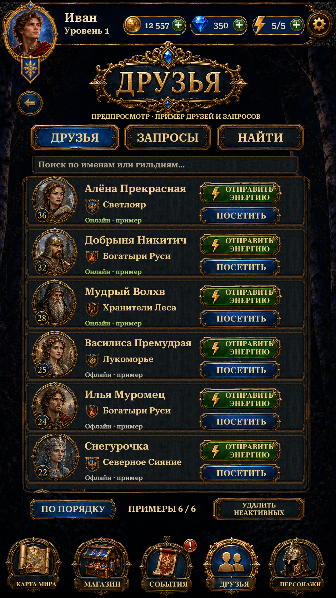

Visual Page24 · Friends List
Original portraits, title, action buttons, gifts and footer icons isolated through Scenario. Native Friends, Requests and Find tabs, local search/sorting, live account values and Russian/English text.
Implementation and checks · Reference differences · Asset provenance · Scenario cost

Actual Unity Play Mode ·941×1672·Russian·isolated test save.22 targeted Unity checks passed:6 Edit Mode and16 Play Mode, including Team Hub/Team Chat regressions.12 Friends List captures. Scenario:24 isolation jobs,72CU; no RGB generation or paid retry.
Friends and requests are labelled examples. Sending energy, visiting, adding, accepting, declining and removing friends show an explanation until the online service is connected. No APK or physical-phone/keyboard verification.